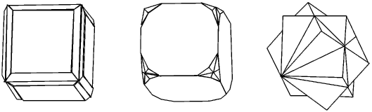

In honour of the substantial contributions made by Professor David Blow to both the BCA and the field of protein crystallography as a whole, the BSG has decided to mark the occasion of his official retirement by renaming the BSG Poster Prize the "D.M. Blow Poster Prize". This prize, which consists of both a cash award and the Blue John trophy, is awarded annually to the group presenting the best biological poster at the BCA Spring Meeting.
This year's
award (1996) was made to Gérard Bricogne's group for their novel presentation
describing the "BUSTER" software for maximum likelihood refinement. This
timely methods development is entirely appropriate and perhaps in time will
contribute as much to protein crystallography as David Blow's original
development, with Michael Rossmann, of the molecular replacement technique.
David was also instrumental in founding both the BCA and its Biological
Structures Group, and hence it is particularly appropriate that one of its
premier prizes should carry his name.
The Blue John trophy itself has been awarded annually since 1991, and
comprises a piece of Blue John crystal mounted on an oak plinth. Both items
were originally donated by Peter Harrison, the owner of the Treak Cliff
Cavern at Castleton. Blue John stone has some historical interest as it was
used in many Victorian memorabilia. We are fortunate in having details of
this particular crystal and this is perhaps an appropriate time to reiterate
a brief history. This history is adapted from an original article provided
for BCA News by David Rice after the first award of the trophy.
Blue John stone was first discovered around 1750 in Treak Cliff, a hill at
the western end of the Hope Valley, Castleton in Derbyshire. Within ten
years it became very fashionable to have ornaments on a fireplace in Blue
John, so by 1 770 there were sixteen mines working in the one hill. They
supplied the stone to about thirty firms in the local area which worked the
Blue John into ornaments for the stately homes of England. Some Blue John
was exported to France to have ormolu and clockwork movements fitted. The
French described the mineral as "Bleu jaune" after its colour which is
basically yellow with bands of blue. The French name was subsequently
corrupted by the English into "Blue John", the name by which it is now
known.
The base of the mineral is calcium fluoride and in Treak Cliff, this
fluorite vein is adjacent to mildly radioactive rocks. The blue colour is
thought to be due to the inclusion in the crystal lattice of hydrocarbons
which have been modified by subjection to millions of years of mild
radiation. The mineral is thus rare, and thought to be found only in
Derbyshire, and only there in one hill, with other coloured fluorites such
as those found in China, being related but non-identical.
Blue John as an ornamental stone fell out of fashion at the end of the
Victorian era and to maintain an industry much valuable Blue John was used
for fluxing steel. The result of this use is that large pieces are now
unobtainable, though plenty remains for jewellery. The particular piece of
crystal that forms the prize was mined in 1976 from the top of the Witches
Cave in Treak Cliff cavern at Castleton. The crystal was found in the "Cliff
Blue" vein, one of the fourteen named veins that run through the hill. On
mining, the rock broke into three pieces. One of these went to the
Geological Museum in London, the second to Manchester University whilst the
third and finest piece remained on display in the Cavern shop until donated
to the BCA.

Forms of Blue John
Editor's Notes:
 Click here to return to BCA homepage
Click here to return to BCA homepage